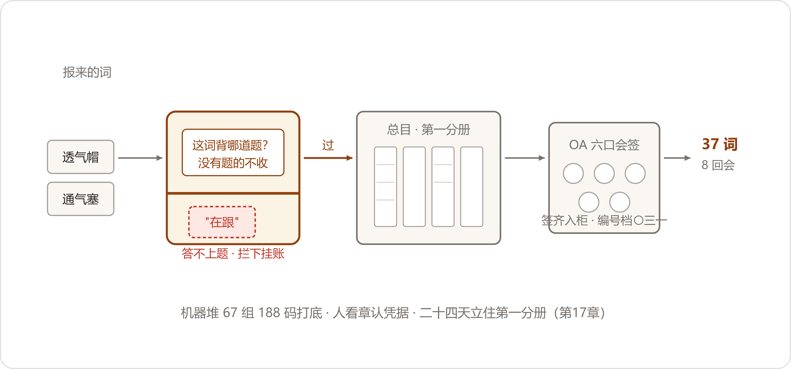

The Groundbreaking
2027年3月2日，星期二。头天夜里落了场雨，早上厂区的路面还湿着，装配车间的天车吊着一件箱体，从车间那头走过来，钢缆上的水一路滴到三号工位门口。陈临到三楼小会议室的时候，暖气刚停了两天，屋里比走廊还凉，他把投影仪打开让它先热着，顺手把两扇窗关严了。
头天晚上建的那个"对词"小群，转正的头一份通知就一句话：对词会，礼拜二、礼拜五下午各一回，一回两个钟头。到场的核心四个人：郑敏抱来她那页口径页和一摞旧档，小夏抱着笔记本电脑，赵峰进来的时候手里多了个新本子——深蓝布面的硬壳，竖着翻，是他头天下班绕到文具店挑的，挑了三家才挑着。他把本子在桌上磕齐了，才坐下。
"记录得有个记录的样子。"他说。
头一段由陈临讲。他把礼拜一下午在档案室听到的东西讲了半个钟头：八五年头一回，十一柜的名目一起合，黄了，黄在想一口吃全、没人拍板、坐在屋里编；八六年第二回，先合传动一门，贺所长亲自坐镇，每礼拜两回，吵出结果当场落字，一个记录员，一场会一页，吵一条记一条，谁提的谁签字。讲到"一行注，议半日"的时候，郑敏把手里那页纸翻过来压了压，没插话。
讲完了，规矩落上白板，一共四条：质量域起头，只做一个机型，JS-1100；吵着定，不坐着编，定不了的记着下回再吵；吵一条记一条，谁提的谁签字，赵峰记录；凭据上会，空口报词不议。赵峰一笔一划往新本子第一页上抄，抄完念了一遍，四个人都没挑出毛病。
会开到第二段，陈临把一张打印的清单发下去。他年前年后琢磨了一路的东西，昨晚又改到后半夜：审核细则第四页的4.3、4.4，一条一条拆成问句。
"这张单子先于词。"陈临说，"词要进总目，得背着一道题进来。背不上题的词，再顺口也不收。收进来的词，最后一道验收，就是拿这张单子从头问一遍——问句走得通，图才算立住。"
他把话先说死："这张图，不给演示用。演示的图我们做过一张，六月三十号，演完就停在墙上了。这张图就伺候两种人：五月十号抽签的审核员，和郑敏。他俩答得上，图就活；他俩答不上，画成花也是白画。"
小夏一直没吭声，这会儿把笔搁下了。"我那个九十二分的作业，"她说得快，"头一步就是写'这张图要答什么题'。我当时嫌它走形式，仨问题瞎编的，编完就忘了。敢情打分从这一步就打起了——我扣的分，多半扣在这儿。"
"那这回补上。"郑敏说，"我那三问，天天在答，先记我名下。"
散会前派了活。小夏把ERP、MES、QMS、售后库里JS-1100身上出现过的名目全跑一遍，长得像的堆成一堆——叶老说机器替他们抄，这一晚见真章。郑敏回去把口径页一年攒下的旧架抄成单子。赵峰把映射本带来，一百三十七行，下回开会一行一行过。
夜里跑库的间隙，小夏翻手机，翻到一个做企业 AI 的号主，叫叶小钗，追了大半年了。翻出两篇旧文。一篇是那号主自己踩坑的复盘，两年踩完一圈，有句话她截了图："画出几张实体关系图，反而是整件事里最轻的一步。"另一篇写的是家卖清洁设备的：同一台设备，在不同渠道挂不同的名；同一个系列，分标准版、青春版、Pro版；一枚配件装不装得上，得看系列、代际、接口——人家把这些立成了十类词，机器自己能推出"这枚滤芯，装得上青春版"。她把两篇甩进对词的小群，附一句："跟咱们一个病。人家连药方都写了。"
礼拜五第二回开会之前，齐连升那边先来了个数，托计划科带到会上：MES批次栏加了必填，头一个礼拜就上了线；上线后新开的两百四十一张工单，批次栏一张没空——空的那三张，是上线头一天手工补录的旧单，也当天补齐了。末了添一句：口子堵上了，旧账的窟窿还欠着。
第二回会吵的是骨架。方致远提前十分钟到，把一册标准和几页机型图在面前码齐了才落座；老唐踩着点到，工帽摘下来拿在手里，进门先看了一眼投影。
议题是JS-1100那张卡上，"属"那一格填什么。方致远翻开标准，手指点着一页："减速器，分类里属传动装置。往下分齿轮、蜗杆、行星；JS系列挂在齿轮底下，JS-1100挂在系列底下。一级是一级。这是标准的架子——审咱们的是整机厂，人家图纸上，咱这类产品就坐在传动装置那格里。架子跟人家对齐了，审核员一眼看得懂。"
"我这儿没有'传动装置'。"老唐把工帽扣在桌上，"车间一台机器，从箱体起一件一件往上装。娃娃们查件，从机器进。你叫他先过一道'传动装置'的空格子——他不知道那是啥，也不用知道。"
"空格子不碍走路。"方致远不急，"今天定一个机型，格子闲着。明年抽着JS-1200呢？机型头上没有架子，第二台进来就得现搭一回，搭一回吵一回。"
"那把架子搭到顶上去，别横在机器和件当中挡道。"老唐说，"审核员抽的是机器，不是学科。他从序列号进来，第一眼该看见他那台机器，第二眼就该看见机器上的件。中间多两级格子，两级都是弯路。"
两个人各说各的，一本标准对一台机器，谁也不让。赵峰的笔停了——这样的架没法记成"谁提的什么词"，他抬眼看陈临。陈临没接话，把问题单从桌上拿起来，念了头一句："审核员抽中一台机器，从序列号起——单子上五问，问句全是从机器起头的，没有一问从学科起头。"
他把单子放回桌子中间。"树，按方部长的立。件的上位认件的类目，一格一个爹，第二个爹注里见——这条是八六年裁过的，我照抄。学科的格子留着，标准号写进注，给整机厂来的人对表用。路，按唐工的修。机型卡底下开一栏'用'，这台机器用什么件，从机型一路点到件，中间不设卡。审核员和车间的娃娃，都从机器进。"
方致远把标准又翻回去，看了一阵，点头："标准号入注，我认。型号序列我来给，别让第二个人编。"老唐也点头，补了一句："'用'栏里写的件名，得是总目认过的名。娃娃点进去点着个生名，比没得查还坏。"
散会的时候，老唐在门口站住，回头冲投影抬了抬下巴："透气帽那个，赶紧定。站上娃娃们还拿小烟囱跟我对暗号呢。"
第三回会，透气帽上桌。段兴在矿上，电话打进来，免提摆在桌子中间，那头的风声一阵一阵灌进来。
小夏先报家底，屏幕上三行：手册和图面，透气帽；ERP的物料描述，呼吸器；站上的叫法栏，小烟囱——挂了半年，二十多条记录从这三个名进来。
"一个件，仨名。"郑敏接得快，报她的数，"ERP里这个件的物料描述印的是呼吸器——光JS-1100一个机型，出入库单子五年上万行。正词要是改，先说存量怎么办——上万行单子，重印一遍？"
"重印"两个字还没落，段兴在那头喊起来了："你们定呼吸器也好透气帽也好，矿上人不认！人家打电话报小烟囱，你们文件上印呼吸器，中间隔着一层，这层就是我。我一年在中间当多少回翻译？"
屋里静了一拍。赵峰的笔尖停在纸上。
陈临想了想，问郑敏："审核员抽着一台机器，指着箱盖顶上那件问：这是什么。你递给他哪张纸？"
"随机文件。合格证、装箱单、备件清单。"
"那上头印哪个名？"
郑敏翻她的夹子。翻到装箱单那页，她的手停了一下——装箱单的模板是从文控受控文件里套出来的，跟图面走，印的是透气帽。她把那页纸抽出来，看了一眼，放到桌子中间："图面为准。文件跟图面走，库存单子是账，账不改。"
落字就顺下来了。正词，透气帽；呼吸器、小烟囱，挂代；ERP的物料描述照旧，不动账；新出的随机文件，从第一版总目起印正词。小夏在词卡上添代的时候说了一句："叶老讲过贺所长给穆工修路那一段——不改他的嘴，给他修条路。咱们这回是真修：系统里敲'小烟囱'，出来的就是这张卡。"
"路修到矿上就行。"段兴在那头说，"小烟囱仨字能敲进去，我认。"
第四回会，轮到"客户"。这回人多了：许曼带着核销口径表，周建海抱着他那个记客户的本子。郑敏主笔，投影上起一行注："客户：指与本公司有销售业务往来的单位。"
"'往来'两个字拿掉。"许曼头一个开口，声音不高，"退过货的算不算往来？寄过样的算不算？写注就是画线，线两头都得钉死，钉不死就别画。"
改成"签订销售合同并开具发票的法人主体"。周建海拍了一下本子："法人主体？林西那个矿，营业执照是分公司，没有法人资格，货照发钱照收十来年了。你这一行字把他开除出客户？"
"那就写'经营主体'。"郑敏改了，又停住，"晋北怎么办。票开给集团，四个矿用货。按票，集团算一户；按走单，四户。"
"这话去年三月我就听过一遍。"周建海的嗓门起来了，"四个矿，我的人一个月跑一趟，跑了两年。设备是青山的，服务是我们做的，到年底一算——一家。增长率我们年年垫底！"
"周总，税号。"许曼说，"法人对法人，税务认、审计认、银行授信认。你要按用货算，代理的终端全得算，那客户数好看，账没法做。"
眼看又要吵成去年那场。郑敏把投影上的那行字拉下来，另起一行，敲得慢："一个词装不下两桩事。拆开——票给谁，谁是客户；货谁用，谁是最终用户。两行注，各管各的。"
陈临把问题单又拿了出来，翻到第四问："同期出厂的同机型，卖给谁了，现在在谁手里——审核员问的是货在谁手里。他抽一台机器，答案落在哪个矿、哪条皮带线上。'最终用户'这个词，背的就是这道题，该进。意向客户——单子上没有它的题，这一册不收，记在本上挂账，往后销售域立册再吵。"
周建海不吭声了，把自己的本子往前一推，摊开，一类一类数给全桌看：集团下头分别走单的，十一家；跟了一年以上的意向，二十六家；走代理的终端，三十八家。"七十五。"他说，"去年许总问我这七十五家各是什么名目，我指不出来。今天指出来了。"
注落字的时候，窗外已经擦黑了，楼下装配车间的天车响过两回。许曼把两行注从头看了一遍："三百八十七，一户一个税号，我拿得出。"周建海把本子合上："四百六十二，往后拆得成三笔账——三百八十七，四十九，二十六。增长率照旧垫底，垫得明白点。"他顿了顿，"考核的架，我找董总吵去。不是今天。"
第五回会开到一半，誊清的词卡摞在桌角已经半尺高，正本的事摆上了桌：这本总目，母本放谁那儿，往后添词改注，谁点头算数。
"第一分册是质量域的，我主责。"郑敏先说，"文控受控，质量部服务器，口径页这么管了快一年，没出岔子。正本挂质量，我签字。"
"第二册呢？"赵峰把笔搁下，"第二册是采购的，第三册是售后的——都挂质量？郑部长，第一册你管得住，第二册起你就说不出口了。挂数字办——机房、快照、版本，本来是我的活。可我这个门房不能当东家：映射本一百三十七行是怎么长歪的，我比谁都清楚，就歪在没人开会。挂我这儿，就得有个会压着我。"
潘永年是叫来议供应商那几个词的，这会儿把茶杯往桌上一放："都别绕我。总目挂了谁家，'供应商'这个词往后就归谁家定。华信仨名当年怎么并的？十九张订单对公章，对出来一家。往后这样的并法，采购没票，我不认。"
小夏翻她的笔记，念了一行："叶老第三条，原话——看门的要是十一家里头的一家，总目就成了那一家的账，别家不认。"
屋里静下来。三个说法各有各的理，谁也压不住谁，会散不了也议不动。郑敏先松的口："……挂质量，第二册起，我自己都说服不了自己。"她把话说到这儿，看了陈临一眼，"这架，这屋解不了。"
第二天上午，陈临上了行政楼三楼。总经理办公室的门还是留着一条缝，门轴一声闷响。贺延龄正在一份红头文件上签字，抬手朝对面的椅子指了指，签完最后一个字才抬头。陈临把对词会五轮的记录摊开，从头讲：三方怎么僵的，叶老那条规矩怎么说，映射本的前科。
贺延龄听得慢，中途没插一句。听完，他把记录拉到自己跟前，又从头看了一遍，手指在"正本"两个字上点了点。
"这事有现成的样子。"他说，"你们文控的受控文件——改版走会，发放有记录，快照月存，老蔡认这套。总目照这套管，别发明新规矩。"他拿过一张纸，边说边让陈临记：正本，电子的挂数字办受控，纸的一套送档案室登记；总目委员会，质量、技术、生产、销售、采购、财务各出一人，六票，数字办当秘书处，赵峰那个记录本就是委员会的记录；添词会一年一回，腊月开，凭据上会，空口不议；急词走通道，过半到场即开，纪要补全体。
"头一年，召集人我兼着。"他把笔帽扣上，"六票吵成三比三，得有人掰秤。我不懂词——你们几位谁跟谁有疙瘩，我懂。"
隔了一天，这事报到了六楼。董鸿章听完，一个问题一个问题地问。
"谁说了算？"
"委员会，六票。"
"三比三呢？"
"挂账，下回再吵。吵不下来的词，进不了目。"
"改错了词呢？"
"记录本上，谁点的头记谁的名。"
"六个人，一年开几回会？"
"腊月一回，急的开短会。"贺延龄说，"工时进各口的协作账——老蔡那条，看不见的工时也是钱。"
董鸿章把桌角那摞记录合上了。"行。三十一号，预审材料连这本，一起送我桌上。"
礼拜五第六回会，委员会头一回开张，六口到齐。章程念了一遍，没人再争。赵峰把那个黑皮本子摊到桌子中间："一百三十七行，今天交公。"一行一行过——升成总目词的，挂代的，凭据不全的挑出来，十九行，记"待核"。过完最后一行，他把本子往桌子中间推了推："往后还是我记。记给委员会。"本子停在了桌子中间。陈临看着它，隔了一会儿，才接着往下主持。
主数据的活，是在负一层开的工。采购的小库房在档案室隔壁，钥匙押在潘永年手上，他开了锁，一股灰味迎面跑出来。架子上牛皮纸袋一排一排，死档的老户都睡在这儿。潘永年派来的人叫鲁向东，采购部的老经办，五十三岁，这摊干了快三十年，进门先开灯，再把窗户支开一条缝，才去搬箱子。
三天下来，鲁向东从死档里圈出二百一十七个编码，近三年一笔流水没有的，全打上了死码的记号。鲁向东有个宝贝，一本翻毛了边的章样簿——几十年里经手供应商的公章、送货章，他都往上盖过一份样。刨出来的是恒鼎的老户档案：一九九六年的供货登记，抬头写着"恒鼎橡塑制品厂"，盖的是圆章；恒鼎现在用的章是方的。他把两张单子并排摆在灯底下看了半天："章换了，字号没换——变更前的名。这是一家。"
礼拜二第七回会，机器头一回上场。小夏把试点几家的名字和描述喂给模型，一夜就堆完了。投影上，恒鼎五个名一堆——ERP里活着的恒鼎、恒鼎橡塑、恒鼎密封科技，加死码里的恒鼎橡塑制品厂、恒鼎密封件；华信仨名一堆；晋南俩一堆；洛轴三户一堆。
恒鼎那堆里，机器还多塞了一个"鼎恒橡塑"，相似度九成四。
鲁向东头一回到对词会，把章样簿往桌上一放，翻到那一页，看了两眼："鼎恒，顺德的；恒鼎，宁波的。俩东家。章不对。"
"机器认字，不认章。"赵峰说，"它管把长得像的堆一块，像不像它说了算，是不是它说了不算。"
点头规矩当场定下来：机器只堆，不并，堆出来的是建议；供应商的词，采购口点头，章、变更函、老合同，凭据拍照进档；件和机型的词，对词会点；谁点的头，记录本记谁的名——错了先查堆，再查凭据，最后才问人。恒鼎五名并一户，潘永年会签。洛轴那堆议得久一点：货是一家造的，钱是三户结的。潘永年把三张凭证并排看了半天，抬起头："词认制造主体，一个‘洛轴’；三户来路写进注；ERP三个编码，账上的事，照旧。"没人反对，赵峰记了，郑敏把注的写法当场念了一遍。
"货是一家造的，钱是三户结的。"潘永年在记录本上签完字，把这句又说了一遍，"词归词，账归账。这个我认。"
3月26日，礼拜五，第八回会，第一分册定稿。词卡誊清，三十七个：机型一个，部件二十三个，口径九个，供应商四家。OA里会签走了一圈，六口的名字一个一个亮起来；小夏把电子稿打印出来，装订机咔哒咔哒压了一下午。陈临没走，在边上帮着接，压出来一本，接一本，接满一摞，挪到手边。首页是这么落的款：
散会时周建海留了句话："刘总让我带个话——第一册出来，给他办公室送一本。他把那四页清单给我们大区全传了，说'暂缺'俩字是这么写的，册子出来了也让他看看。"陈临应了。晚上他把蓝皮本翻到"哪本是正本"那页，在那行"总目。学名，本体"底下又添了一行：正本立了。第一分册，三十七词。
礼拜一下午，陈临把纸本送下档案室。登记簿上这一个月的记录又排下去十几行，陈临签了名，把装订好的册子放在长案上。叶老把老花镜架上，先不看词，拿起赵峰的记录本，从头翻。翻得慢，一场会一场会地过，翻到透气帽那页，又翻回前头对了一遍日期。
"吵一条记一条。"他说，"提词的、点头的，都有名。行，是这么记的。"
再翻词卡。翻到透气帽那张，他停的时间最长，手指在"代"那一行上放了一会儿。"我们那本，它是挂在'通气器'底下的代。"他说，"你们图面写透气帽，它就是正词——图面为准，各家的正本各家的图面定。穆工要是在你们厂，这个架他吵不成。"
翻到"关键件"，他停住了。那行注写的是：指对产品质量有重大影响的件。他从案头拿起铅笔，在那行字边上打了个问号，又添了两个字：存疑。
"这行注是抄的，抄你们程序文件的。"他说，"'重大影响'——轴算不算？螺栓算不算？写注的人不能绕，绕了，吵架的时候这行字不管用。"
第二天礼拜二，急通道头一回用上——六口到了四口，"关键件"的注当场重写：指关重件目录及随机备件清单列明之件；目录外购入之标准件，另立"通用件"。赵峰写完念了一遍，自己先笑了："这行注，跟八六年'易损件'那行，一个模子。"改页重新打印，委员补签，下午纸本入柜，受控编号档〇三一，就放进第三排柜子腾出来的那格里。叶老把抽屉推上，钥匙拧了半圈，把册子在格子里摆正，才让开身子。郑敏补完签没急着走，把自己主笔的那页抽出来，对着灯看了一遍，把纸角捋平了，才放回去。
"第二册别照这册抄。"他说，"每册都得自己吵一遍——吵不出来的册子，纸再厚也是死的。下一册，做谁？"
"供应商。"
"多少户？"
"编码九百一十二。"
叶老想了想。"我们当年，十一柜。"他说，"你们这一柜，大。"
3月31日上午，预审材料五项连第一分册送上了六楼。4.3那一栏照实填：图内二百八十五台，任抽，当场重演；图外机型未入；总目第一分册（一机型，三十七词）已立。董鸿章翻得慢，一页一页翻过去，翻到落款那页停了停，把册子摞回材料最上头。
当天夜里，赵峰把九百一十二个编码全量跑了一遍，机器标出"疑似一家"的六十七组，涉及一百八十八个编码。他把打印出来的那摞纸放在陈临桌上，指着其中一行：华信那一组，机器堆进去俩生名——"华信传动设备"，ERP里的老编码，八年没动过；"华信精工"，死档里的。真一家，假一家，得叫鲁向东看章。
陈临把那摞纸拿起来掂了掂，又放回去。
"四月，"他说，"啃这个。"

开工头一个月，记账：